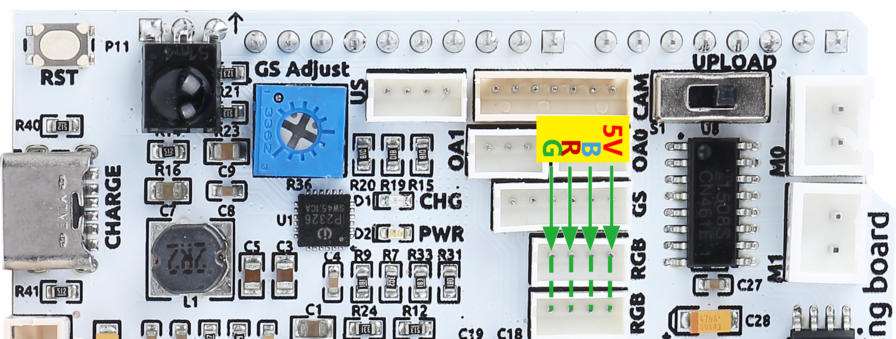

Note
Hallo und willkommen in der SunFounder Raspberry Pi & Arduino & ESP32 Enthusiasten-Gemeinschaft auf Facebook! Tauchen Sie tiefer ein in die Welt von Raspberry Pi, Arduino und ESP32 mit anderen Enthusiasten.
Warum beitreten?
Expertenunterstützung: Lösen Sie Nachverkaufsprobleme und technische Herausforderungen mit Hilfe unserer Gemeinschaft und unseres Teams.
Lernen & Teilen: Tauschen Sie Tipps und Anleitungen aus, um Ihre Fähigkeiten zu verbessern.
Exklusive Vorschauen: Erhalten Sie frühzeitigen Zugang zu neuen Produktankündigungen und exklusiven Einblicken.
Spezialrabatte: Genießen Sie exklusive Rabatte auf unsere neuesten Produkte.
Festliche Aktionen und Gewinnspiele: Nehmen Sie an Gewinnspielen und Feiertagsaktionen teil.
üëâ Sind Sie bereit, mit uns zu erkunden und zu erschaffen? Klicken Sie auf [hier] und treten Sie heute bei!
Zeus Car Shield

Hierbei handelt es sich um eine All-in-One-Erweiterungsplatine, die von SunFounder für Arduino entworfen wurde. Sie enthält verschiedene Modulanschlüsse wie Motor, Lichtleiste, Hindernisvermeidung, Graustufen, ESP32 CAM und Ultraschallmodul. Eingebaut ist auch ein HS0038B IR-Empfänger für die Fernbedienung.
Diese Erweiterungsplatine verfügt auch über einen eingebauten Ladekreis, der den Akku mit PH2.0-5P-Schnittstelle laden kann, und die geschätzte Ladezeit beträgt 130 Minuten.
Zeus Car Shield Anschlüsse

- Reset-Taste
Drücken Sie diese Taste, um das Programm auf dem Arduino-Board zurückzusetzen.
- Ladeanschluss
Nachdem Sie in den 5V/2A USB-C-Anschluss eingesteckt haben, kann er verwendet werden, um den Akku in 130 Minuten aufzuladen.
- Batterieanschluss：
6,6V~8,4V PH2.0-5P Stromversorgung.
Versorgt das Zeus Car Shield und das Arduino-Board gleichzeitig mit Strom.
- Ein-/Ausschalter
Auf ON schieben, um das Zeus Car Shield einzuschalten.
- IR-Empfänger
Dies ist ein HS0038B IR-Empfänger, dessen Signalpin mit Pin 2 des Arduino-Boards verbunden ist.
- Zum Graustufenmodul
Graustufen-Justierpotentiometer: Wird verwendet, um die Referenzspannung für das Omni-Graustufen-Modul einzustellen.
Graustufenanschluss: Zum Anschluss des Omni-Graustufen-Moduls.
- Anzeigen
Ladeanzeige: Leuchtet rot, wenn das Shield über den USB-C-Anschluss geladen wird.
Stromanzeige: Leuchtet grün, wenn der Ein-/Ausschalter auf “ON” steht.
Batterieanzeige: Zwei orangefarbene Anzeigen repräsentieren unterschiedliche Batteriestände. Sie blinken während des Ladens und schalten sich aus, wenn die Batterie aufgeladen werden muss.
- Ultraschallanschluss
Zum Anschluss des Ultraschallmoduls sind beide Pins, Trig & Echo, mit Pin 10 des Arduino-Boards verbunden.
- Kamera-Adapteranschluss
Der Anschluss für das Kamera-Adapter-Board.
- Anschluss zur Hindernisvermeidung
Wird verwendet, um zwei IR-Hindernisvermeidungsmodule anzuschließen, die Signale der beiden Anschlüsse sind mit Q0 und Q1 des 74HC165 verbunden.
- RGB LED Streifenanschluss
Zum Anschluss von 2 RGB-LED-Streifen sind die drei Pins des Streifens entsprechend mit 12, 13 und 11 verbunden.
- Laufschalter
Wenn Sie die Kamera verwenden möchten, müssen Sie diesen Schalter umlegen, damit der ESP32-CAM mit dem Arduino-Board kommunizieren kann.
- Motoranschluss
4 Gruppen von Motoranschlüssen.
Batterieanschluss
Hier sehen Sie das Pinout-Diagramm für die Batterieschnittstelle. Der Typ ist PH2.0-5P und der Eingangsspannungsbereich liegt zwischen 6.6V und 8.4V.

Zum Graustufenmodul
Ein blauer Potentiometer auf dem Zeus Car Shield dient zur Anpassung der Empfindlichkeit des Graustufenmoduls an verschiedene Umgebungen. Dies geschieht durch Einstellen der Referenzspannung für das Modul. Über den VREF-Pin erhält das Graustufenmodul die eingestellte Referenzspannung.

Hier ist das Schaltbild. Die Werte des Graustufenmoduls werden von dem 74HC165-Chip auf das Arduino-Board übertragen. Da das Graustufenmodul selbst einen 74HC165-Chip besitzt, wird durch die Kaskadierung dieser beiden Chips eine 16-Bit-Datenübertragung zum Arduino-Board ermöglicht. Die ersten 8 Bit sind Daten des Graustufensensors und die letzten zwei Bit sind Daten für die IR-Hindernisvermeidung.


Die Pin-Zuordnung dieses Ports auf dem Arduino-Board ist unten dargestellt.
Arduino Board |
Zeus Car Shield |
7 |
74HC165 Q7 |
8 |
74HC165 CP |
~9 |
74HC165 PL |
Ultraschallanschluss
Hier ist das Pinout für den ZH1.5-4P Ultraschallanschluss. Die Trig & Echo Pins sind mit Pin 10 auf dem Arduino Board verbunden.
Kamera-Adapteranschluss
Hier sehen Sie das Pin-Diagramm für die Kamera-Adapter-Schnittstelle. Der Typ ist ZH1.5-7P.
TX und RX werden für ESP32 CAM verwendet.
SDA und SCL sind für QMC6310.
Anschluss zur Hindernisvermeidung
Hier ist das Pinout-Diagramm für die zwei ZH1.5-3P Hindernisvermeidungsanschlüsse.

Wie im Schaltplan gezeigt, beziehen sich S1 und S0 auf Q0 und Q1 auf dem 74HC165 Chip. Zwei 74HC165 Kaskaden übertragen die Daten der beiden IR-Hindernisvermeidungsmodule und des Graustufensensors auf das Arduino Board. Die ersten acht Bits sind Daten des Graustufensensors und die letzten zwei Bits stellen Daten für die IR-Hindernisvermeidung dar.


RGB LED Streifenanschluss
Hier ist das Pinout-Diagramm der zwei RGB LED Streifen. Sie sind parallel geschaltet und die Pinbelegungen sind identisch.
Hier ist das Schaltbild.


Motoranschluss
Hier ist das Pinout der 4 Motoranschlüsse.
{kind=link}
Diese 4 Motorengruppen werden von 2 TC1508S Chips angetrieben. Dies ist ein Dual-Kanal-Motortreiberchip, der einen maximalen Dauerstrom von bis zu 1.8A pro Kanal ausgeben kann.
Hier ist das Schaltbild.

Die entsprechenden Steuerpins der 4 Motoranschlüsse sind unten aufgeführt.
Arduino Board |
Zeus Car Shield |
~3 |
OUTA1 |
4 |
OUTB1 |
~5 |
OUTA2 |
~6 |
OUTB2 |
A0 |
OUTB4 |
A1 |
OUTA4 |
A2 |
OUTB3 |
A3 |
OUTA3 |